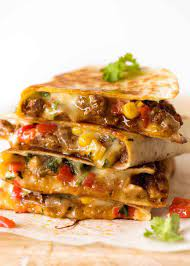

Quesadilla

Description
A Quesadilla is a relatively simple Mexican dish that consists of a tortilla, cheese, and any other toppings/fillings you would like to include.
It is one of my favorite dishes becuase of my adoration for cheese, and the flexibility of the quesadilla to be as unique as you want it to be.
Ingredients
- Large flour tortillas
- Grated cheese - either cheddar or monterey jack
- Olive oil or butter
Steps
- Heat the tortillas until air pockets form.
- Add cheese and other optional ingredients.
- Lower heat and cover pan.
- Fold tortilla over.
- Remove quesadilla from pan and cut into wedges.